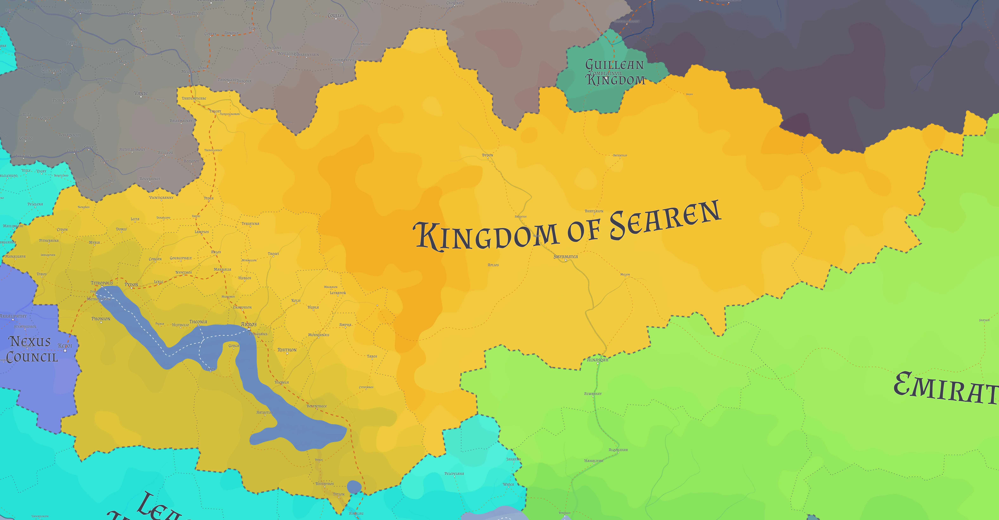

Flag
Details
Official Name: Kingdom of Searen
Demonym: Searish
Capital: Akros
Official Language: Searish
Government: Feudal monarchy
Currency: Searish Crown
Area: 503,000 km²
Population: 3,800,000
Borders: Zayalomovsia, Al Shumeiyatia, Kuolamania, Nexus, Neuleia, Guille
Overview
The Kingdom of Searen is a landlocked monarchy and, for centuries, the world’s foremost magical power. Its royal family and court are made up of trained mages, and its academies are among the most prestigious in the world. Searen has rarely sought to expand its borders. It has instead spread its religion, education, calendar and sciences far beyond them. The independence of the Nexus and the war with Zayalomovsia have left the kingdom in its weakest position in centuries.
Geography

A large mountain range runs through the centre of Searen, enclosing the Guillean Kingdom in its north-eastern reaches. West of the mountains, the climate is warm, and almost the entire population lives there. Most of its major cities, including the capital Akros, are gathered around a lake of roughly 17,000 km².
East of the mountains lies a vast, arid desert with very few settlements. The border with Al Shumeiyatia runs through this desert.
Government
Searen is ruled by its royal family, every member of which is a trained mage. Official positions at court are reserved for the kingdom’s most powerful mages. The provinces are administered by their own bureaucratic institutions and owe taxes to the crown, a degree of autonomy that allowed the Nexus to break away.
Magic and Technology
Magic is the foundation of Searish society, from its government and military to its agriculture and production. Searen’s academies, such as the Lefkapon Academy of Magical Sciences, attract students from across the world. The country remains committed to magic as the basis of its power and has been slower than other nations to adapt to the rise of technology.
Military
Searen has traditionally relied on its mages for defence. In the war with Zayalomovsia, its military has withdrawn from the eastern border and evacuated several eastern cities.
Economy
Searen uses the Searish Crown. Foreign students are a major source of income, and many settle in the country after completing their studies. Widespread use of magic allows for efficient production of food and goods. Searen also receives reparations from the Nexus for its secession.
Foreign Relations
Spoilers for Season 1 - Chapter 32 below
Searen has long exerted influence through culture rather than conquest, and its religion, education, calendar and sciences have spread throughout much of the world.
Searen is at war with the Commonwealth of Zayalomovsia. Searen held the upper hand in the early years, but the tide has since turned against it, and a ceasefire has been extended indefinitely. Searen has entered a formal alliance with the Emirate of Al Shumeiyatia.
The Nexus gained its independence from Searen through its monopoly on portal technology and continues to pay reparations to the crown. Searen’s most populated regions lie along its borders with Neuleia and the Nexus.
Notable Searish
- Nolla Raoult
- Zera Ammar
- Yannis Salas
- Phoebe Callelli
- Ophelia Anastouli
- Livia Dupont
- Sonya Tateli